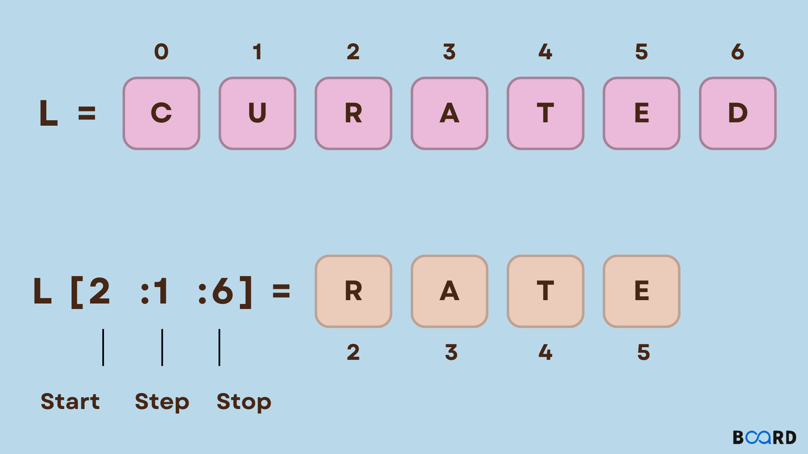
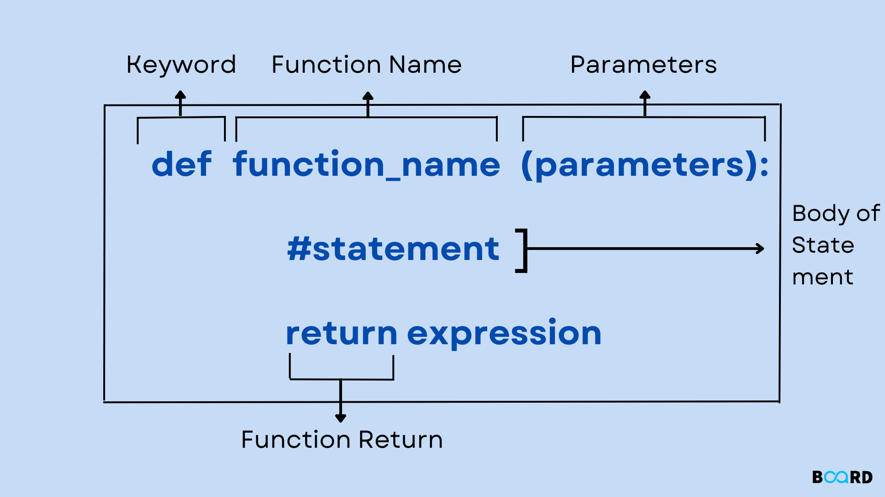

class: center, middle, inverse # Basic Python Reminders --- class: center <img src="./guido.jpg" class="w-full"/> -- [Guido! My love!](https://en.wikipedia.org/wiki/Guido_van_Rossum) Second [best](https://en.wikipedia.org/wiki/Edsger_W._Dijkstra) dutch computer scientist --- # Agenda 1. I/O - `input` and `print` 1. conditionals - `if`, `elif`, `else` 1. Strings - And useful methods 1. `list`s and useful methods 1. `dict`s and useful methods 1. loops - `for` and `while` 1. functions - `def` - arguments - `return`s (and not returns) - `pass` --- # Before everything else ## Where do I get info? -- 1. [Stack Overflow](https://stackoverflow.com/) -- 1. Google (which will point you to Stack Overflow) -- 1. [devdocs.io](https://devdocs.io/) - Save it to a bookmark/favorite, and configure your most used languages/packages -- 1. ChatGPT -- 1. [Gemini](https://gemini.google.com/) (which will probably give you an answer based on Stack Overflow) --- class: center, middle, inverse # Output and Input --- # Output Done using `print` ```python print("Hello world!") # output: Hello world! ``` -- can print multiple types, seperated by commas ```python num = 3 b = True print("Hello", "world!", num, b, 3.14) # output: Hello world! 3 True 3.14 ``` -- <br/> .callout-blue[**Reminder**: Always line-breaks at the end] --- # Input Done using the `input` ```python name = input("What is your name? ") # name is a str ``` -- **Important**: return value is always a `str` and YOU need to cast it ```python age = input("What is your age? ") # age is a str age = int(age) # age is now an int ``` -- Or in 1 line so that the variable does not change types ```python age = int(input("What is your age? ")) ``` -- <br/> .callout-blue[**Reminder**: Also always line-breaks at the end] --- class: center, middle, inverse # Conditionals --- # `if` and his family Basic structure is simple: ```python if <condition-1>: # do something elif <condition-2>: # do something else elif <condition-3> # do another something else else: # All other cases ``` - Conditions are checked **in order** - If you use `elif` and `if`, Only one clause will get executed --- # Lets look at an example Take a minute to look at this code ```python x = int(input("Enter a number: ")) if x > 0: print("Positive") elif x % 3 == 0: print("Multiple of 3") elif x < -20: print("Small negative") else: print("Zero") ``` -- - for `x == 10`: -- `Positive` -- - for `x == 9`: -- `Positive` -- - for `x == -6`: -- `Multiple of 3` -- - for `x == 0`: -- `multiple of 3` -- - for `x == -21`: -- `multiple of 3` -- - for `x == -7`: -- `zero` -- - for `x == -22`: -- `Small negative` -- Aaaaaand that's it! --- class: center, middle, inverse # Strings --- # String Basics ```python my_str = "hello strings" ``` -- - **access** ```python my_str[0] # h my_str[1] # e my_str[-1] # s my_str[-2] # g ``` -- - **slicing** ```python s = my_str[0:5] # s == hello ``` -- - **`len`** ```python length = len(my_str) # length == 13 ``` -- - **concatenation** ```python new_str = my_str + " are fun" # new_str == "hello strings are fun" ``` --- # Some important points -- - No such thing as a **`char`** in Python - only strings of length 1 ```python my_char = "a" len(my_char) # 1 type(my_char) # <class 'str'> ``` - Strings can be empty ```python empty_str = "" len(empty_str) # 0 ``` -- - Strings are immutable ```python my_str = "Hello" my_str[0] = "h" # Error ``` --- # Some useful methods and properties you can find all of these on devdocs.io under in the [string section](https://devdocs.io/python~3.10/library/stdtypes#str) Some examples: -- - **Manipulation** - `upper`, `lower`, `capitalize` - `strip` - `replace` - `split` -- - **Testing** - `isalpha`, `isdigit`, `isalnum` - `startswith`, `endswith` -- - **Searching** - `find`, `index` - `count` -- These are only partial examples, there are many more! --- class: center, middle, inverse # Lists --- # Lists An ordered collection of items ```python l = [1, 40, -4, 0, 365] print(l[1]) # 40 ```` - Can hold multiple types of items - But this is usually **a BAD idea** - **Mutable** - can be changed ```python l[2] = 0 print(l) # [1, 40, 0, 0, 365] ``` --- # Useful methods and properties of lists - Quick copy with slicing `[:]` ```python l = [1, 2, 3] l2 = l[:] # this is different from l2 = l ``` - check if something is `in` ```python if 1 in l: print("1 is in the list") if 4 not in l: print("4 is not in the list") ``` -- - [common sequence methods](https://devdocs.io/python~3.10/library/stdtypes#typesseq-mutable) and [mutable sequence methods](https://devdocs.io/python~3.10/library/stdtypes#typesseq-mutable) -- - Additional method: [`sort`](https://devdocs.io/python~3.10/library/stdtypes#list.sort) - **in place** -- - `join` - **not** a list method, but a string method that takes a list as an argument, and prints it's elements with the string as a separator ```python "-->>".join(l) # "1-->>40-->>0-->>0-->>365" ``` --- class: center, middle, inverse # Tuples --- # Tuples An ordered, **immutable** collection of items - So it's like lists, but you can't change it ```python t = ("Michael", 35, True) # creation with parentheses print(t[1]) # 35 # access with square brackets t[2] = False # Error - can't change ``` -- - Can **destructure** - assign to multiple variables ```python name, age, is_student = t print(name) # Michael print(age) # 35 ``` -- - Can hold many types of items - And (unlike lists) this is usually the case - Usually what we get is a list of tuples... -- - Useful functions that return tuples: `dict.items()`, `enumerate`, `zip` --- class: center, middle ## A minute to talk about # Slicing --- # Slicing - Allows to create a new collection from some part of an existing *sequential* collection - Won't work on 'dict' and 'set' - Creates a **new** collection and **does not** change the original - syntax:  --- class: center, middle ## A minute to talk about # (Im)Mutability --- # Mutable vs. Immutable `list`s are mutable - you can change them ```python l = [1,2,3] l[1] = "two" print(l) # 1, "two", 3 ``` -- `str`ings are immutable - you cant change them. ```python s = "hello" s[1] = 't' # Throws an error ``` -- You can, however, create a new string ```python s2 = s[:2] + "r" + s[3:] print(s2) # s is not "heklo" ``` --- class: center, middle, inverse # Dictionaries --- # Dictionaries - An associative collection of key-value pairs -- - **Unordered** - no indexing - There is an ordered version in Python 3.7+ (`OrderedDict`) -- - keys are uniques, values are not. -- - keys and values can be of any type - But it's a bad idea. ### Basic usage ```python d = {"name": "Michael", "age": 35, "is_student": True} # creation print(d["name"]) # Michael # access is with square brackets d["children"] = 2 # adding a new key-value pair - also square brackets len(d) # 4 - number of key-value pairs ``` --- # Some useful methods and properties - Testing a key: ```python if "name" in d: # checking if value in *keys* print("name is in the dictionary") # prints if "Michael" in d: print("Michael is in the dictionary") # does not print ``` -- - Testing and getting a value from a key: ```python d.get("age", 0) # 25 d.get("married", False) # False - gets the default value ``` -- - getters: ```python d.keys() # dict_keys(['name', 'age', 'is_student', 'children']) d.values() # dict_values(['Michael', 35, True, 2]) d.items() # dict_items([('name', 'Michael'), ('age', 35), ...]) ``` -- - Deletion: ```python del d["name"] # deletes the key-value pair ``` --- class: center middle # `str` is a weird collection! -- It's a collection of itself... --- class: center, middle, inverse # Loops --- # `while` loops Most basic loop that every language has. ```python while condition: do_something() do_after_loop() ``` -- You can do everything with them, but they are most useful when you don't know how long (how many iterations) something is going to take -- common uses (NOT an exhaustive list): - Input from user ('till he gets it right') - Endless loop with `white True:` - exiting with `break` --- # `break` and `continue` 2 extra ways to control the flow with a loops - `break` - stops the loop - the next line is the line after the loops - `continues` - stops this iteration of the loop and goes to the next one. -- Important notes: - work for both `while` and `for` loops -- - work only on containing loop - if loops are containing other loops, the outer ones are not affected ```python res = [] while len(res) < 3: while True: input = input("what is your name?") // TODO: finish this if input[0].islower(): print("Name should start with uppercase letter") else * break ``` --- # `for` loops Loops that iterate over elements in a collection (an iterable collection) - providing access to one element at a time. ```python l = [1,2,3,4] # will also work with a tuple sum = 0 for element in l: print(element) sum = sum + element # sum += element ``` -- - can be used to destructure inner collections ```python l = [("Michael", 35), ("Miri", 32)] for name, age in l: print(f"{name} is {age} years old") ``` -- - Very useful. - `break` and `continue` also work here --- class: center, middle, inverse # Common `for` loops with collections --- # Common `for` loops with collections ```python for i in range(2, 10, 2): # can be wi 1, 2 or 3 arguments print(i) ``` -- ```python print("possible names:") # enumerate can also be called without the extra argument for i, name in enumerate(["Michael", "Daniel", "Jonathan", "William"], 1) : print(f"{i}. {name}") ``` - notice the destruction of the tuples -- ### for dictionaries ```python d = {"michael": 35, "daniel: "32", "jonathan": 40} for k in d: # equivalent to for k in d.keys() print(d) # michael, daniel, jonathan for val in d.values(): print(d) # 35, 32, 40 ``` -- ```python for key, value in d.items(): print(f"{key} is {value} years old") ``` --- class: center, middle, inverse # Functions --- # Functions Basics - The basic building blocks of most programming languages. --  --- # Things to think about - NAME!!!! - Interface: **arguments** (types and names) and **return type** (if any) - Exceptions (errors) thrown - state changing (not only for class\object methods) -- - return will break the function in any point -- # Please remember: - type hints - docstrings --- # Good practices -- - Names! Names! and some more NAMES! - for both functions and arguments - Function should either return a value (pure functions) or change state. Avoid doing both. - type constraints (and actually all constraints) are your friends. Embrace them. - In python all function return a value. `None` by default. - If you are copy-pasting more that one line, maybe it should be in a function. --- class: center, middle # But that is not all! Oh no. That's not all --- # Some advanced topics regarding functions: We are not going to talk about these, but you are welcome to read about them - `kwargs` (key-word arguments) - `lambda` functions - closures (common in js, still useful in python) - inside classes it gets even more complicate - static functions - class functions - properties (setters and getters) - decorators (functions for functions) - possible without decorators, but not common in python --- class: center, middle, inverse # Working with **Files** --- # Files: some theoretical background - Files are Operating System (OS) resources: Managed by the OS -- - You'r access, may prevent other programs from accessing the resource -- - You need to tell the OS when you are done with the resource - Sort of... -- - You can look at the file as text (string) or as binary (byte stream) -- - There are 3 basic modes to open a file: - read (`r`) - write (`w`) - overwrites the file if exists - append (`a`) - adds to the end of the file, create if does'nt exist -- - and 2 more advanced modes: - read and write (adding `+` to some modes) - exclusive creation (`x`) - will fail if file exists -- - an open file has a cursor (or a position). - operations depend on the position - operation may change the position --- # Files in python asking for the resource - creating the file objet with [`open()`](https://devdocs.io/python~3.10/library/functions#open): ```python f = open("path/to/file.txt") # default is read mode f = open("path/to/file.txt", "w") # write mode f = open("path/to/file.txt", "a") # append mode ``` -- More advanced stuff: ```python f = open("path/to/file.txt", "r+") # read and write mode f = open("path/to/file.txt", "rb") # exclusive creation mode ``` -- and now I can work with this: ```python content = f.read() # read the whole file f.write("new content") # write to the file f.seek(0) # go back to the beginning of the file ``` -- ### There are more functions. Read about them. --- # Some important remarks -- ### What about closing (releasing) the file? - `f.close()` - Most of the time, python's garbage collector will do it for you, but don't trust it! -- ### OS resource operations may fail - `open()` and each other operation (read\write) can throw an error - Check for return values -- ### [`pathlib`](https://devdocs.io/python~3.10/library/pathlib#pathlib.Path) to the rescue ```python import pathlib p = pathlib.Path("path\\to\\file.txt") content = p.read_text() ``` --- class: center, middle, inverse # Any questions? --- class: center, middle, inverse # Get to work!